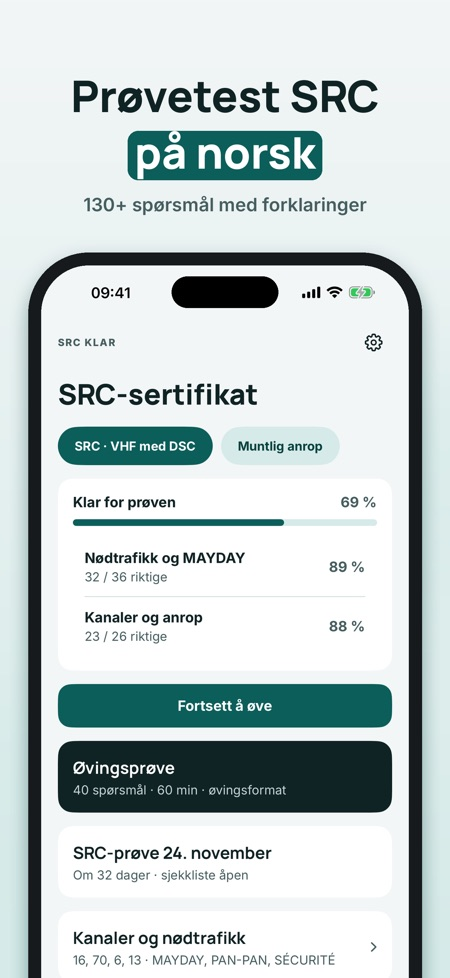
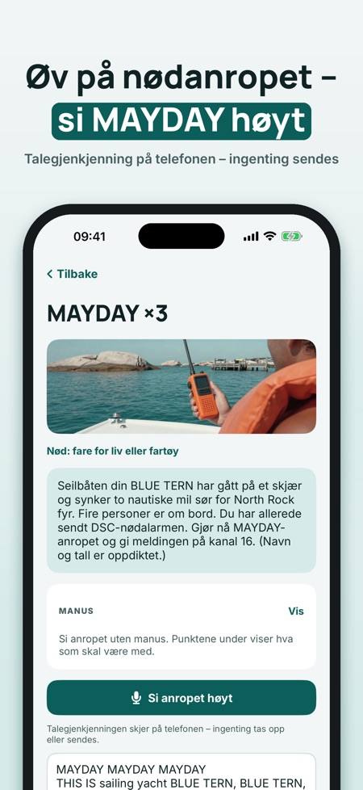
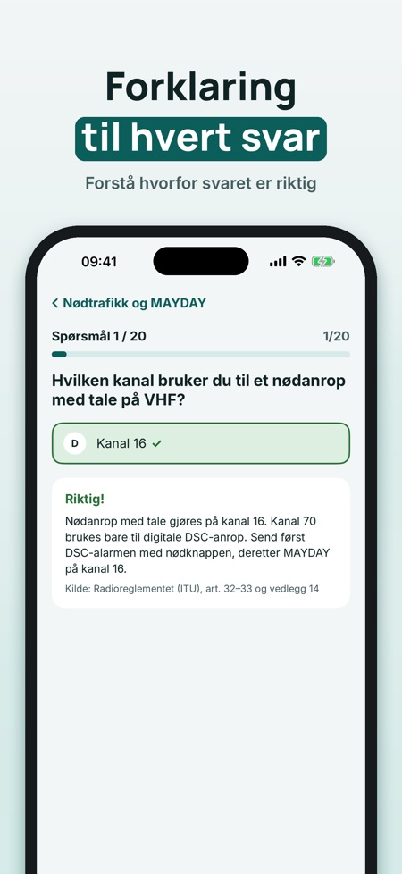

Øv til SRC-prøven og nødanrop. Øv til SRC-prøven: spørsmål med forklaring, prøvetester, VHF-kanaler og nødanrop du sier høyt – på norsk og uten nett.



SRC Klar hjelper deg å øve til SRC-sertifikatet for VHF med DSC – med anropsprosedyrer du øver med stemmen.
Du kan øve på 20 spørsmål, ta én hel prøvetest og bruke ordlisten og sjekklisten uten kjøp. Fullversjonen er et engangskjøp som låser opp alle spørsmål, prøvetester og anropsøving med stemmen. Ingen abonnement.
SRC Klar er uavhengig og ikke tilknyttet Nkom, Sjøfartsdirektoratet eller noen prøvearrangør. Prøven tar du hos en kursarrangør.